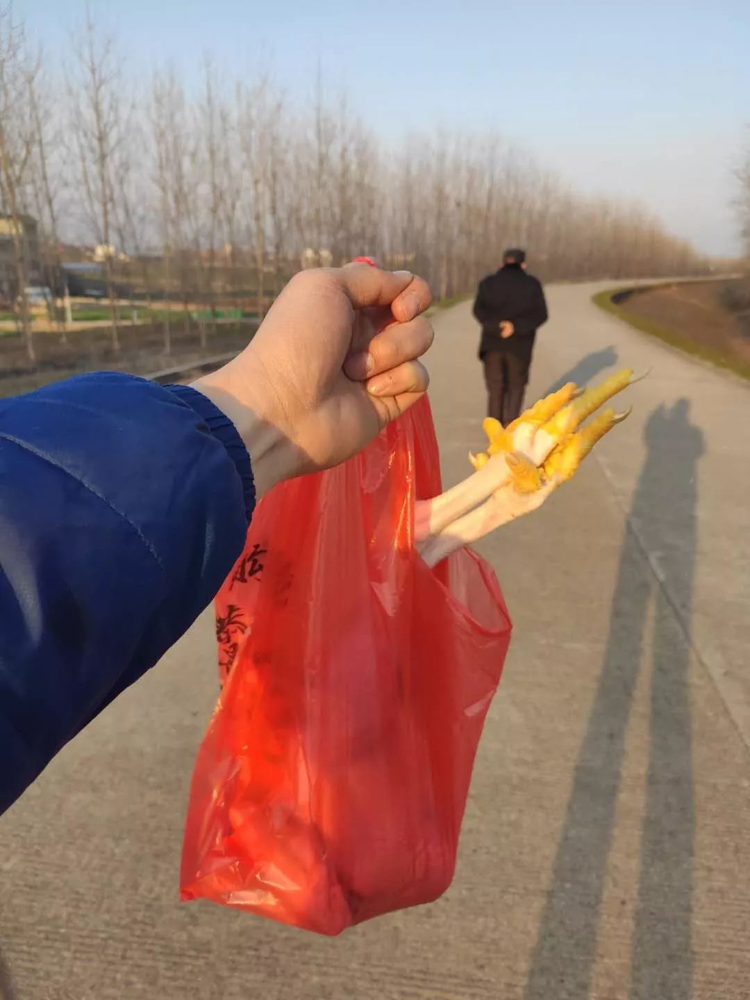
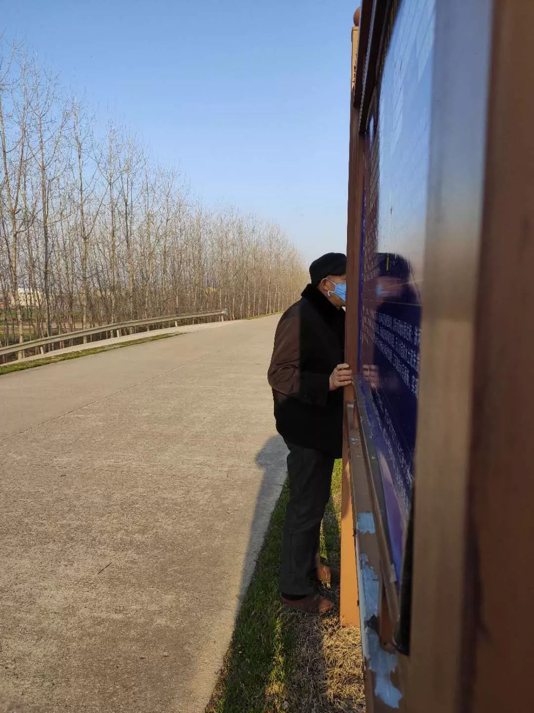

留守的外地厨师：我真心为热干面加油丨人间
原文链接 备份链接 “第一次给医院送餐，我觉得空气里都是病毒……后来看到一位护士累得趴着睡觉，也不能回家，就觉得自己太没种了，一点胆量都没有，也就不觉得病毒可怕了。” 配图 | Sipa图片社 王绎龙的家乡是距离武汉120公里的一个小县 …

（一）
去鸡场买鸡。跟父亲走到离鸡场还有十米远的地方。
他停住了：“那边是不是有狗？”
我看了看前方，“应该没得。”
他还是不放心：“你去你去，我在这里等你。”
我笑问：“你这么怕狗？”
父亲说：“么人怕？我走累了，在这里等你。”
回家后，我跟母亲说起这事，母亲说：“他噢，我刚嫁给他时，一起走亲戚，门口有一条细土狗，才叫了一声，他就往我身后躲！”

（二）
又有一次，去大堤散完步回来，远远地看到父亲站在路牌旁边。我走过去，喊他，他没理我。我再喊他，他还没理我。我拍拍他的肩头。
他回头，一脸惊讶的样子：“庆儿，你么看到我咯？”
我说：“我二十米远就看到你了。”
他摇头说：“我明明躲在这里。”
我说：“爸，我眼睛又没瞎。”
他说：“你就装作没看到我嘛。”


（三）
渐渐黄昏了，阳光一点点斜下去。
走了半晌，父亲也累了，找了个地儿坐下来。
我问他在想什么，他说：“有时候觉得这样也蛮好的。”
我问怎么个好法，他又笑笑，起身说：“我们再走走。”

（四）
下楼到前厢房，电视还在开着，父亲已经躺在沙发上睡着了，阳光洒在他的身上。我悄悄地走过去看他，他可能感受到有人，慢慢地睁开眼。
我说：“你继续睡嘛。”
父亲说：“真暖和，自家也不晓得为么子睡着了。”
说完又不好意思地笑起来，我问他笑什么。
他说：“一睁开眼，没想到你在这里嘛。”

（五）
我爹到我房间来视察工作，把我撵起来，看我电脑：“你今天没写我？”
我说：“没有。”
我爹说：“屋前屋后都你写了，你为么子就不写我？”
我回：“我就是不写。”
我爹叹气：“我实在当年因为穷读不起书，我要是念了书，写起来比你好多咯……你莫轻狂！”
然后，他昂首离开，看都不看我一眼。

（六）
早上我下了一锅面条，给父亲装了满满一碗。
吃到中途，我问：“好吃啵？”
父亲愣了一下，只见他眼珠像是被猛兽追杀的小白兔一般乱窜，半分钟后才叹气说：“好吃……我儿管做么子都好吃……”
我吃完了一碗，去灶台看了一下，“锅里还有。”
立马传来回应，“我不要不要！你全部铲咯！好吃你就多吃一点！”

（七）
跟我父亲一起泡脚，我拍照。
他问：“这有么子好拍的！就拍我老的样儿。我年轻时几帅你不拍。”
我说：“你年轻时我还没出生。”
他说：“那就可惜咯，你问你妈，我年轻时有模有样！”
母亲从灶屋探出头，“真不要脸！”

邓安庆
长按二维码向我转账
受苹果公司新规定影响，微信 iOS 版的赞赏功能被关闭，可通过二维码转账支持公众号。
原文链接 备份链接 “第一次给医院送餐，我觉得空气里都是病毒……后来看到一位护士累得趴着睡觉，也不能回家，就觉得自己太没种了，一点胆量都没有，也就不觉得病毒可怕了。” 配图 | Sipa图片社 王绎龙的家乡是距离武汉120公里的一个小县 …
原文链接 备份链接 高得勇 （第三批上海支援湖北医疗队队员、松江区中心医院感染科医生） 我父亲极少主动给我打电话，今年不同了，他连续3次给我打电话。 1月20号第一个电话父亲问：“你今年春节不回家过年了吗？小王（我爱人）回来过年吗？”我 …
原文链接 备份链接 “ - 疫 情 之 下 - 父亲作为一家之主，把家里卖粮食的一万多块钱当做货款结给了供应商，按照他交代给我们的原话：“咱们已经吃亏了，就不要再让别人吃亏了，也让人家回家好好过个年。” ” …
原文链接 备份链接 说起来在老家待这么久，一直有外面的朋友问我：“你那边怎么样了？还好吗？”我回他们说：“别的我不敢说，菜是管够的。”的确，从未像今年这样吃了这么多的蔬菜：包菜、上海青、菜薹……每餐总有一样素的，另外搭配一些鱼肉。母亲总担 …
原文链接 备份链接 （1） 随着我亲戚关注我的公众号越来越多（在我堂姐热情推送下），我越发不敢写家里的事情了。一旦涉及到真实的人际关系，情况就复杂很多。以前我的文字跟我的父母是隔开的，现在我今天写了什么，隔壁的婶娘就会跑去跟我父亲说：“哎 …